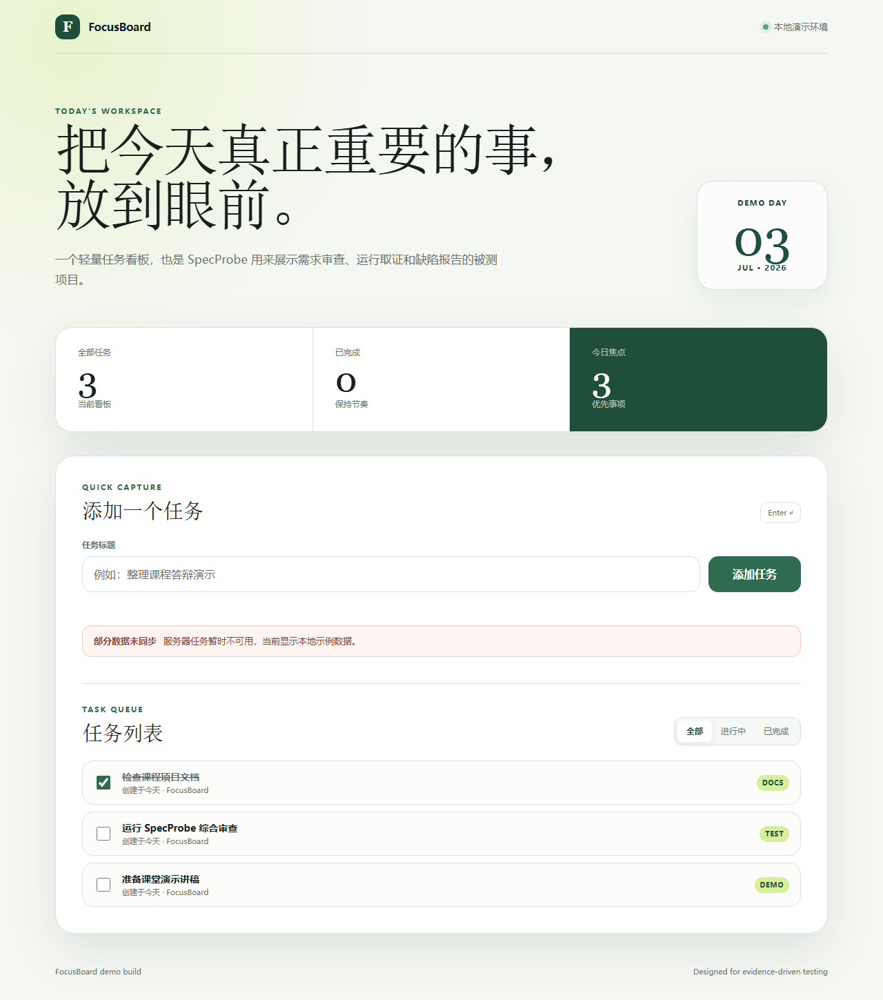
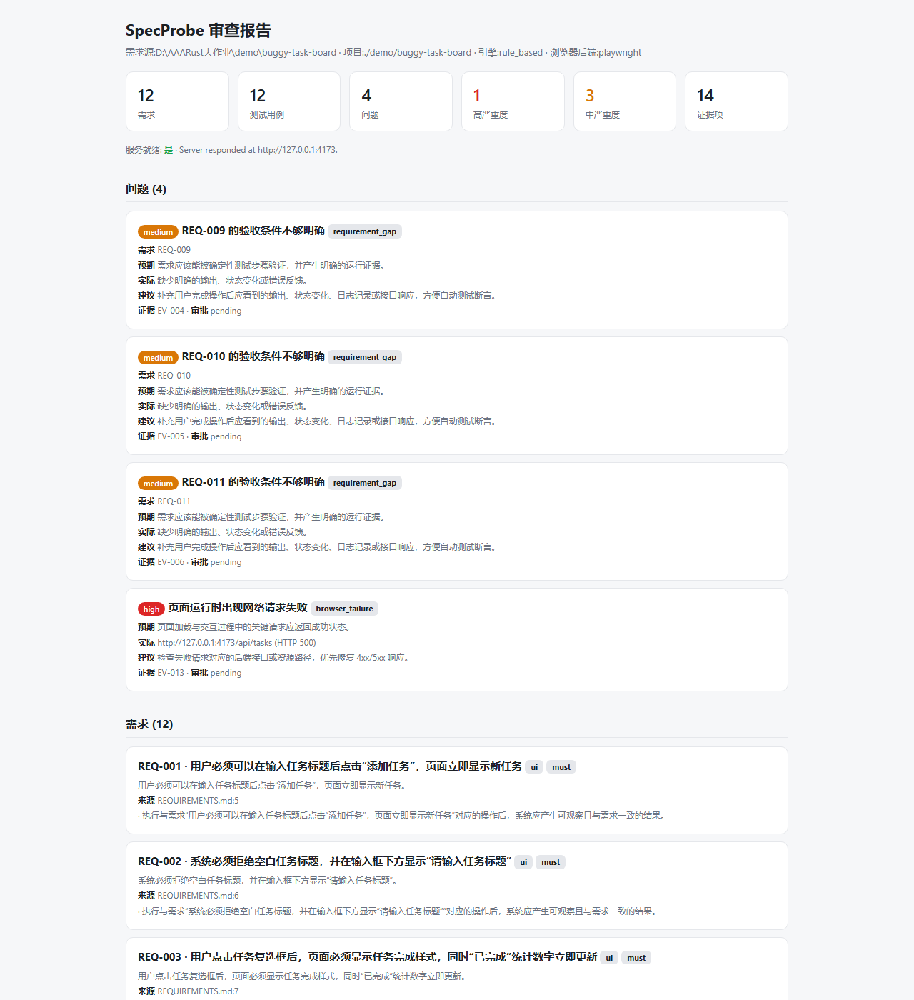

SpecProbe
| 团队成员 | 【姓名】(学号:【学号】) |
| 项目版本 | v1.0.0(2026-07-12 发布) |
| 源码仓库 | https://github.com/pxgt/Rust_Final_job |
| 代码规模 | Rust 约 13,900 行 / 26 模块 + Node sidecar 312 行 |
| 质量指标 | 103 个自动化测试 · Clippy 零警告 · Linux/Windows/macOS 三平台 CI |
| 提交日期 | 2026-07-15 |
一、团队成员与分工
| 成员 | 学号 | 分工 |
|---|---|---|
| 【姓名】 | 【学号】 | 单人成组,独立完成全部工作:选题与需求定义、总体架构设计、全部 Rust 模块与 Node sidecar 开发、 测试体系与三平台 CI 搭建、FocusBoard 基准项目与真机验收实验、全部文档(路线图 / 台账 / 验收记录 / 威胁模型)与本报告。 |
二、项目背景与目标
2.1 背景:AI 辅助开发的"验证缺口"
大模型辅助编程工具(Copilot、Cursor 等)让"把需求变成代码"的速度大幅提升,但同时放大了一个老问题: 代码生成得越快,验证越成为瓶颈。开发者面对 AI 产出的项目,往往只有一份宽泛的需求描述和一堆"看起来能跑"的代码—— 需求是否真被满足、页面交互是否符合预期、接口是否按约定返回,缺少一条低成本、可信的验证路径。 人工点检费时费力;传统端到端测试又要求先写好脚本,与"需求还在用自然语言表述"的现实脱节。
2.2 项目目标
SpecProbe 的目标是打通"自然语言需求 → 可验证断言 → 真实运行取证 → 缺陷检出与诊断 → 自动修复与回归验证"的完整闭环, 让使用者对一个 Web 项目只需一条命令,就能得到一份带证据链的问题清单,并可以对确认的问题一键生成、应用并验证修复补丁。 设计上坚持一条核心原则:
git apply --check、断言强度护栏)才被采信;
所有结论都附带可核查的证据(截图、网络记录、控制台日志、源码定位)。2.3 预期功能(立项时确定,最终全部实现)
- 需求理解:解析 Markdown 需求文档,产出带行号溯源的验收标准与测试计划;
- 真实执行:自动识别并启动被测 Web 项目,用真实浏览器执行由 LLM 生成的具体交互场景;
- 证据链:采集截图、console、网络失败、DOM 摘要、进程日志,问题清单逐条关联证据;
- 缺陷诊断:对运行期失败叠加 LLM 深度诊断,定位到源码文件与行号;
- 修复闭环:生成补丁 → 安全应用到隔离分支 → 自动回归验证,失败自动回滚;
- 工程成熟度:一键命令、配置文件、HTML 报告、运行归档与审批工作流、跨平台、安全边界。
三、系统设计与实现思路
3.1 总体架构
SpecProbe 是一个 Rust 单体 CLI(tokio 异步运行时),浏览器执行经由一个 Node.js Playwright sidecar 子进程完成, 两者通过 stdin 发送 JSON 动作计划 / stdout 回传 NDJSON 事件流的带版本协议通信。 未安装 Node/Playwright 时自动降级为 HTTP 探测,保证 CI 与最小环境可用。
┌─ CLI 层(clap)──────────────────────────────────────────────────────────────┐ │ check(一键主入口) · review/propose · fix --apply --verify · issues/runs │ │ requirements/ai/launch/browser · init/doctor/setup-browser │ ├─ 编排层 ──────────────────────────────────────────────────────────────────────┤ │ check.rs:扫描→精解析→确认→编排执行→报告 review.rs:证据汇总→问题清单 │ │ regression.rs:worktree 重跑→指纹对比裁决 remediation.rs:修复提案 │ ├─ 能力层 ──────────────────────────────────────────────────────────────────────┤ │ requirements/refine:需求两级流水线 scenario:LLM 场景生成+修复回路 │ │ browser:场景执行编排+采样并集 playwright.rs ⇄ runner.mjs(sidecar)│ │ runtime:启动命令识别/托管生命周期/进程树 kill diagnosis:源码级诊断 │ │ patch:补丁生成(git apply --check 门) apply:隔离分支应用与回滚 │ ├─ 基础设施层 ──────────────────────────────────────────────────────────────────┤ │ ai.rs:Provider 抽象+run_chat_json(缓存/重试/反馈重问) redact:出站脱敏 │ │ storage:SQLite 归档/审批指纹/命令记忆 report:HTML 报告 ui:进度条 │ └──────────────────────────────────────────────────────────────────────────────┘
3.2 主要模块
| 模块 | 职责 |
|---|---|
check.rs | 一键主入口:扫描 → 需求精解析 → 启动命令交互确认(安全边界)→ 编排执行 → 报告/归档 |
requirements.rs / refine.rs | 需求两级流水线:规则引擎粗筛兜底;LLM 精解析产出行号溯源的验收标准,校验失败自动回退 |
scenario.rs | 基于页面 DOM 摘要 + 需求生成带真实 selector 的交互场景;执行级修复回路与断言强度护栏 |
browser.rs | 场景执行编排:探针 → 生成 → 执行 → 修复 → 多轮采样取检出并集;证据归档 |
playwright.rs + runner.mjs | sidecar 协议(9 种动作原语/事件流);动作失败重试、trace 归档、崩溃识别、失败时 DOM 快照 |
runtime.rs | Node/Rust/Python 启动命令识别;托管生命周期(起服务→就绪探测→优雅关停);进程树 kill;日志脱敏 |
review.rs / diagnosis.rs | 证据汇总为带审批状态的问题清单;LLM 深度诊断输出源码定位与置信度 |
patch.rs / apply.rs / regression.rs | 修复闭环:LLM 生成 unified diff(强制过 git apply --check)→ 隔离分支应用(失败回滚)→ worktree 重跑回归验证 |
ai.rs / redact.rs | OpenAI 兼容/Ollama/Mock 三种 Provider;通用聊天回路(缓存、退避重试、schema 反馈重问);出站密钥脱敏 |
storage.rs | SQLite(rusqlite bundled)运行归档、Issue 审批指纹持久、启动命令确认记忆 |
report.rs / output.rs / ui.rs | 自包含 HTML 报告(minijinja + base64 内联截图);全命令 --json;indicatif 进度条 |
scanner.rs / doctor.rs / config.rs | 技术栈识别;环境诊断;specprobe.toml 配置(CLI > 环境变量 > 配置 > 默认) |
3.3 关键数据结构
- 证据链模型:
ReviewReport { summary, evidence[], issues[], diagnoses[] }—— 每个Issue携带expected / actual / evidence_ids / recommendation,证据(EvidenceItem)独立编号, 问题与证据解耦但强关联,是"证据驱动"的骨架。 - Issue 指纹:
sha256(category | requirement_id | title)截取 16 hex——同一问题跨运行的稳定身份。 审批决定(accept/reject/ignore)按指纹持久到 SQLite,重跑时新运行自动继承,被忽略的问题不再打扰用户。这是"平台"区别于"一次性脚本"的关键设计。 - sidecar 协议:
PlaywrightAction9 种动作原语(goto/wait/click/fill/press/expect_visible/expect_hidden/expect_text/screenshot) 与RunnerEvent事件(action_result 带 attempts、failure_snapshot、trace、fatal…),带版本号,未知事件向前兼容。 - 回归裁决:
RegressionVerdict { verified, target_resolved, resolved[], remaining[], new_issues[] }—— 修复前后两个指纹集合的纯函数对比结果。
3.4 核心机制与算法
(1)LLM 可靠性基座:run_chat_json 通用回路
全项目所有 LLM 调用(精解析/场景生成/场景修复/诊断/补丁)复用同一个回路:
请求指纹缓存 →(未命中)带指数退避的传输重试 → schema 校验 → 校验失败把错误原因回喂模型重问(≤2 轮,末轮宽容解析)。
模型输出永远不被直接采信,而是先经过各调用方注入的确定性 parse 校验(合法需求 ID、selector 白名单、diff 可应用性等)。
(2)执行级场景修复回路与"防目标冲突"设计(本项目最具辨识度的机制)
LLM 生成的测试场景本身可能有缺陷(选错 selector、漏步骤),导致"测试坏了"被误报成"应用坏了"。 朴素的解法——失败就让 LLM 改场景——存在目标冲突:修复回路可能顺手把真缺陷的检测也"修"掉。我们的设计用三层防线消解:
- 分类规则:场景第一个失败步骤是操作类(goto/wait/click/fill/press)→ 场景没能走到断言,可修复; 是断言类(expect_*)→ 这是缺陷证据,绝不修复;步骤未执行 → 不修复;
- 断言强度护栏:修复后的场景必须保持 expect_* 动作类型多重集与 expect_text 断言文本与原场景完全一致 (只许修操作步骤与断言 selector),违反即拒绝并反馈重问——模型在结构上不可能通过"修复"弱化检测;
- 证据保全:修复失败保留原始失败证据;修复成功的场景,首轮失败动作降级为 Info 并标注,整体结论以修复后为准。
修复的证据输入包含失败当刻的页面 DOM 快照(sidecar 在动作最终失败时采集回传),这让"动态元素 selector 错误"这类最常见的场景缺陷可以被精确修正。 真机验收中护栏两度拦下了真实模型试图弱化断言的"修复"(见 4.3 节 B2 轮)。
(3)多轮采样取检出并集
LLM 场景生成存在内在波动(同一需求不同轮次生成的断言强度不同)。--samples N(≤3)让每轮在 prompt 注入轮次标记
(同时区分缓存键与驱动多样性),独立生成/执行/修复,再按需求取检出并集:任一轮断言失败即判失败并保留该轮证据,
已失败判定不被后续轮"洗白"。方向选择有实证依据:真机观察到的波动全部是漏检方向,而误报侧已由审批指纹持久化兜底。
(4)修复闭环:生成 → 隔离应用 → 回归验证
- 生成(
fix):从归档报告取问题描述与诊断定位的源码文件,LLM 产出 unified diff; 硬约束进校验回路——只允许修改提供的文件、必须通过git apply --check,不过则带反馈重问; - 应用(
--apply):前置校验 git 仓库且工作区干净(否则需--allow-dirty)→ 终端展示 diff 并确认 → 新建隔离分支specprobe/fix-<issue>应用并提交 → 切回用户原分支;任何一步失败自动回滚,绝不触碰用户当前分支; - 验证(
--verify):用git worktree把修复分支物化到临时目录(不动工作区)重跑评审, 按指纹对比修复前后:目标缺陷消失且无新增问题 → 验证通过保留分支;否则自动删除分支并列出证据。
(5)安全边界(详见仓库 docs/THREAT_MODEL.md)
- 执行被测项目代码前必须终端确认(非 TTY/EOF 一律拒绝);确认过的命令按"项目+命令"记忆,变更命令重新询问;
- 发给第三方 LLM 的全部内容在唯一出站入口做密钥脱敏(敏感键值 + sk-/ghp_ 等令牌前缀);进程日志同样脱敏;
- 被测项目内容与 LLM 输出一律视为不可信数据,全链路确定性校验 + 人工确认门;托管进程用进程树 kill(Windows taskkill /T,Unix 进程组)防孤儿进程。
3.5 工程实践
- 测试体系(103 个):95 单元 + 8 CLI 集成(assert_cmd + insta 快照)。LLM 相关逻辑用本地假 HTTP 端点逐字节验证传输、重试与反馈重问; 回归验证等依赖运行时的机制用"需求质量缺陷"作确定性载体,使 CI 在无 Node 环境下也能忠实覆盖闭环逻辑。
- CI:GitHub Actions 三平台矩阵(Linux/Windows/macOS)+ 独立 lint job(fmt --check + clippy -D warnings),全程保持绿色。
- 纪律:Conventional Commits(38 次提交);每步"实现 → fmt/clippy/测试 → 真机验证 → 文档 → 提交";
高风险探索(1.8)在独立分支进行,以
v0.9.0标签为回档基线,验收达标才合入 main。
四、实验结果
4.1 已实现功能总览
| 命令 | 功能(全部支持 --json) |
|---|---|
check [PATH] | 一键检查:扫描→精解析→确认后起服务→浏览器执行→问题清单+HTML 报告;--samples 2|3 多轮采样 |
init / doctor / scan | 配置模板生成 / 环境诊断 / 技术栈识别 |
requirements / ai | 需求两级流水线解析 / LLM 结构化改进建议 |
launch / browser / setup-browser | 受控启动采证 / 浏览器场景执行(无 Playwright 自动降级 HTTP)/ 一键装 runner |
review / propose | 证据汇总问题清单(--execute 托管编排)/ 修复提案与回归清单 |
runs list|show · issues list|show|accept|reject|ignore | 运行归档浏览 / 审批工作流(指纹跨运行持久) |
fix <ID> [--apply] [--verify] | 补丁生成(git apply --check 校验)/ 隔离分支应用 / worktree 回归验证 |
4.2 一键检查演示(FocusBoard 基准项目)
仓库内置 demo/buggy-task-board(FocusBoard):一个注入了 5 个已知缺陷(见 KNOWN_ISSUES.md)的任务看板,
作为全程评估的判分基准。一条命令即可完成端到端检查:
$ specprobe check ./demo/buggy-task-board --base-url http://127.0.0.1:4173 --yes
...
- EV-011 [fail / browser-diagnostic] Network failure: http://127.0.0.1:4173/api/tasks (HTTP 500)
- EV-012 [info / page-probe] Playwright captured page 'FocusBoard | SpecProbe Demo' with 15 interactive element(s).
- EV-014 [warning / browser-diagnostic] Browser console reported 2 error message(s).
HTML report written to .specprobe/report.html

check 产出的自包含 HTML 报告(问题清单 + 证据链 + 内联截图,支持明暗主题)4.3 基准评估与对比分析(核心实验)
实验设置:被测 FocusBoard 含 5 个注入缺陷(API 固定 500 / 空白任务可添加 / 完成统计不更新 / 筛选不生效 / localStorage 不持久);
模型 DeepSeek(deepseek-chat,OpenAI 兼容传输);浏览器 Chromium(Playwright);全部轮次 --no-cache 强制重新生成,检验真实波动。
(1)检出率演进(纵向对比)
| 阶段 | 机制 | 检出(5 个注入缺陷) |
|---|---|---|
| 课程阶段基线(0.8.0) | 关键词规则 + HTTP 探测(无真实 AI / 无真实浏览器) | 1/5 |
| Phase 1(真实化) | 真 LLM 场景生成 + 真浏览器执行 + 源码诊断 | 4/5(复测波动 3~4/5) |
| Phase 1.8(稳定化,v1.0.0) | + 执行级修复回路 + 断言强度护栏 + 多轮采样并集 + 地标快照 | 6 轮全部 ≥4/5,4 轮 5/5 |
(2)1.8 稳定性验收(6 轮独立复测,单采样 vs 多采样对照)
| 轮次 | 配置 | 检出 | 误报 | 备注 |
|---|---|---|---|---|
| A1 | 单采样 | 5/5 | 0 | |
| A2 | 单采样 | 5/5 | 0 | |
| A3 | 单采样 | 4/5 | 0 | DEMO-003 断言弱化漏检(体现单次波动) |
| B1 | samples=2 | 4/5 | 0 | 并集救回筛选类 2 项(首轮单独仅 3/5) |
| B2 | samples=2 | 5/5 | 1 | 并集救回 DEMO-003;误报源于场景猜测类名 |
| B3 | samples=2 + 地标快照 | 5/5 | 0 | 两轮独立全中,零误报收尾 |
分析:
- 历史"3~4/5 看运气"(最差 3/5)收敛为全部 6 轮 ≥4/5;采样并集的救援直接可见——B1 首轮单独仅 3/5,被第二轮拉回 4/5;
- 历史上从未检出的 DEMO-005(localStorage 持久化)本轮 6/6 稳定检出(LLM 学会用 goto 复访问验证恢复,且断言强度被护栏保持);
- 修复回路在 B2 真实触发:模型的"修复"两度试图弱化断言,均被断言强度护栏拒绝,原始失败证据保留——防目标冲突设计在真实模型下有效;
- B2 唯一误报暴露了 DOM 摘要盲区(断言目标是非交互元素,模型只能猜类名),据此追加地标快照(采集带 id 的非交互元素),B3 复测误报消除。 这体现了"实验暴露问题 → 机制修复 → 复测验证"的完整实验方法。
此外,LLM 诊断对 API 500 缺陷的源码定位(server.js:46/47 行)经人工核对完全准确。
(3)修复闭环端到端
fix 命令族在真机(含本地假端点与真实模型)验证了全部路径,示例输出:
$ specprobe fix ISSUE-001 --provider openai-compatible --apply --verify
Fix patch for ISSUE-001 (targets: server.js) Verified with `git apply --check`.
--- a/server.js
+++ b/server.js
@@ ... (diff 展示) ...
About to apply this patch to a new branch specprobe/fix-issue-001 ... Apply? [y/N] y
Applied patch on branch specprobe/fix-issue-001 (commit 3403273); restored to master.
Verifying the fix by re-running review on the branch…
Regression check PASSED — the target defect is resolved and no new issues appeared.负向路径同样验证:修复不达标时自动回滚分支并列出"仍在/新增"的问题指纹;工作区不干净、非 git 仓库、分支已存在等守卫均正确拒绝。
4.4 质量指标汇总
| 维度 | 结果 |
|---|---|
| 自动化测试 | 103 个(95 单元 + 8 CLI 集成/快照),全部通过 |
| 静态检查 | cargo clippy --all-targets -- -D warnings 零警告;cargo fmt --check 通过 |
| 跨平台 CI | GitHub Actions:Linux / Windows / macOS 测试矩阵 + 独立 lint job,历次提交全绿 |
| 代码规模 | Rust ≈13,900 行 / 26 模块;Node sidecar 312 行;38 次 Conventional Commits |
| 文档 | README / 路线图 ROADMAP / 台账+开发日志 PROJECT / 验收记录 ACCEPTANCE / 威胁模型 THREAT_MODEL |
五、开源项目参考说明
5.1 原创性说明
本项目不是任何开源项目的二次开发:全部 Rust 源码(≈13,900 行)、Node sidecar、FocusBoard 基准项目与全部文档均为本课程期间原创。 对开源生态的使用限于两类:(1)以 Cargo 依赖方式引用的通用库;(2)以独立子进程方式调用的 Playwright 浏览器自动化框架。均未复制、修改其源码。
5.2 依赖的开源库及用途
| 开源项目(许可) | 在本项目中的角色 |
|---|---|
| tokio(MIT) | 异步运行时:并发的进程编排、超时控制、sidecar I/O |
| reqwest + rustls(MIT/Apache-2.0) | HTTPS 客户端:LLM API 传输、页面探测、就绪轮询 |
| clap(MIT/Apache-2.0) | derive 风格 CLI:14 个子命令的参数解析与帮助 |
| serde / serde_json(MIT/Apache-2.0) | 全部结构化数据的序列化;LLM JSON 输出解析 |
| rusqlite,bundled SQLite(MIT) | 运行归档、审批指纹、命令确认记忆的本地存储(免系统依赖) |
| Playwright(Apache-2.0) | 经自研 Node sidecar(runner.mjs)驱动 Chromium 执行动作、采集证据;协议、重试、trace、快照逻辑均自研 |
| minijinja / indicatif / sha2 / thiserror / anyhow / toml / base64(MIT 等) | HTML 报告模板 / 终端进度 / 指纹哈希 / 错误建模 / 配置解析 / 截图内联 |
| insta / assert_cmd / predicates(MIT/Apache-2.0) | 开发期依赖:JSON 快照测试与 CLI 集成测试 |
5.3 与相关开源工具的区别
| 相关工具 | 它做什么 | SpecProbe 的区别与改进 |
|---|---|---|
| Playwright Codegen / Test | 录制用户操作生成回放脚本;开发者手写断言 | 输入是自然语言需求文档而非人工录制;断言由需求推导且有强度护栏;失败自动关联需求生成带证据的问题,而非仅测试红绿 |
| AI 断言/测试生成类(如 ZeroStep、CodeceptJS-AI) | 用 LLM 把自然语言步骤翻成浏览器操作 | 不止"翻译步骤":两级需求流水线、执行级修复回路(防目标冲突)、多轮采样并集、诊断到源码行号,并向后延伸出修复与回归闭环 |
| AI 修码工具(如 Aider、SWE-agent) | 按用户指令直接修改代码 | 修复必须先有运行证据支撑的缺陷检出;补丁经 git apply --check 门、只落隔离分支、自动回归验证不达标即回滚——把"改代码"约束在可审查、可撤销的边界内 |
综合而言,SpecProbe 的差异化在于用一条证据链把"需求理解—真实执行—缺陷检出—诊断—修复—回归"串成闭环, 并为其中每个 LLM 参与的环节配套确定性防线(这也是防"目标冲突"修复回路、断言强度护栏等机制的原创动机)。
六、总结与展望
本项目按路线图完成了全部四个产品化阶段(真实化 / 检出稳定性 / 易用性 / 修复闭环),
在 FocusBoard 基准上把注入缺陷检出率从基线 1/5 提升到稳定 4~5/5,
并交付了一键检查、证据链报告、审批工作流与安全的修复闭环。如实声明的边界:
补丁只保证"可干净应用、隔离、可回滚",语义正确性仍需人工审阅合并;
脱敏为启发式,不应在被测项目中硬编码真实密钥;runs diff、彩色终端输出等小项作为遗留记录于路线图。
未来可沿多语言适配器(Python/Go 项目)与 API 执行器方向扩展广度。
附:完整过程资料见仓库 —— 路线图 docs/ROADMAP.md · 开发日志 PROJECT.md · 真机验收记录 docs/ACCEPTANCE.md · 威胁模型 docs/THREAT_MODEL.md · 课程阶段基线 docs/EXPERIMENT.md。